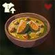

Pumpkin Stew
A nice pumkpkin of stew a day keeps the bokoblins away.

Ingredients:
- 1 small pumpkin or 2 cups pumpkin puree.
- 2 cups vegetable or chicken broth
- 3 radishes, finely sliced
- 1 onion, diced
- 2 cloves garlic, minced.
- 1 carrot, diced.
- Salt, pepper, and nutmeg to taste.
- Olive oil.
- Fresh herbs for a garnish.
Instructions:
- If using a whole pumpkin, cut in half, remove seeds, and roast in a 400°F (200°C) oven until soft. Scoop out the flesh and set aside.
- In a pot, heat olive oil and sauté onions, garlic, and carrot until softened.
- Add the pumpkin and broth, then bring to a simmer. Season with salt, pepper, and a pinch of nutmeg.
- Blend until smooth using an immersion blender or in batches in a countertop blender. Serve hot with fresh herbs on top.
Description:
A hearty and wholesome stew made from the essence of pumpkin.
The subtle sweetness of the pumpkin is balanced with savory ingredients, making for a delightful and filling dish.